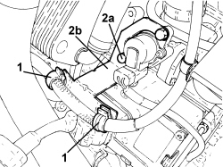
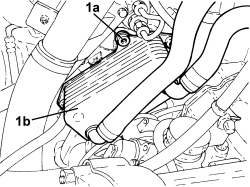
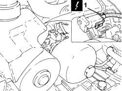
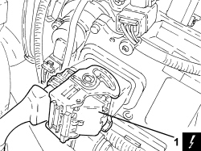
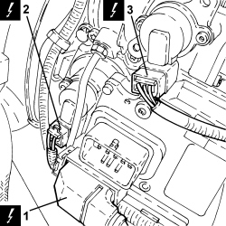
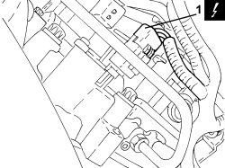
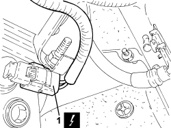

2127E94 WIRING FOR MANUAL GEARBOX HYDRAULIC SELECTION SYSTEM ON HYDRAULIC SELECTION UNIT - R.R. OR REPLACE
- Path
- Procedures > 21 GEARBOX UNIT > 2127 ELECTRO-HYDRAULIC SELECTION GEARBOX EXTERNAL CONTROLS > 2127E GEAR CONTROL SELECTION ELECTRIC SYSTEM > 2127E94 WIRING FOR MANUAL GEARBOX HYDRAULIC SELECTION SYSTEM ON HYDRAULIC SELECTION UNIT - R.R. OR REPLACE
- Kind
- repair procedure (removal / refitting; the operation number is the code)
- Applies to
- engines: 2.2 JTS; all production periods
- Interactive page
- https://sloeber94.github.io/elrnDB-aBrrSpdr/en/#/946004321
Applies to: engines: 2.2 JTS; all production periods
 Removing
Removing
 Refitting
Refitting- Position the vehicle on a lift.
- Place the gear lever in N.
Op. 5530B52 BATTERY SUPPORT/DRIP TRAY - R.R
Op. 7055B54 UNDER ENGINE PROTECTION/GUARD - R.R.
1. Open the starter motor supply lead retaining clips.
2. Undo the bolts (2a) and remove the wiring holder bracket (2b).

Applies to: engines: 2.2 JTS; all production periods
1. Unscrew the bolts (1a) securing the engine oil heat exchanger (1b) complete with pipes and move it aside.

Applies to: engines: 2.2 JTS; all production periods
1. Disconnect the electrical connection for the electric pump.
Description | Connector | |
|---|---|---|
1 | Robotized gearbox fluid pump |

Applies to: engines: 2.2 JTS; all production periods
1. Disconnect the electrical connection for the electronic control unit, front wiring side.
Description | Connector | |
|---|---|---|
1 | Robotized gearbox control unit |

Applies to: engines: 2.2 JTS; all production periods
1. Disconnect the electrical connection for the electronic control unit, gearbox side.
Description | Connector | |
|---|---|---|
1 | Robotized gearbox control unit |
2. Disconnect the electrical connection for the gear selection sensor.
Description | Connector | |
|---|---|---|
2 | Gear selector potentiometer |
3. Disconnect the electrical connection for the clutch position sensor.
Description | Connector | |
|---|---|---|
3 | Clutch position potentiometer |

Applies to: engines: 2.2 JTS; all production periods
1. Raise the vehicle and disconnect the electrical connection for the gear engagement potentiometer.
Description | Connector | |
|---|---|---|
1 | Gear engagement potentiometer |

Applies to: engines: 2.2 JTS; all production periods
1. Discconnect the electrical connection for the gearbox input shaft speed sensor.
Description | Connector | |
|---|---|---|
1 | Gearbox input speed sensor |

Applies to: engines: 2.2 JTS; all production periods
- Open the retaining clips and remove the wiring.
Applies to: engines: 2.2 JTS; all production periods
Refitting
Removing- Place the wiring in its housing and secure it using the retaining clips.
- Connect the electrical connection for the gearbox input shaft speed sensor.
- Connect the electrical connection for the gear engagement position sensor.
- Connect the electrical connections for the gearbox electronic control unit.
- Connect the electrical connection for the gear selector position potentiometer.
- Connect the electrical connection for the clutch position sensor.
- Connect the electrical connection for the electric pump.
- Place the engine oil heat exchanger complete with pipes in its housing and secure it to the mounting bracket using the bolts.
- Place the wiring holder bracket in its housing and secure it using the bolts.
- Position the starter motor supply lead and secure it using the retaining clips.
Op. 7055B54 UNDER ENGINE PROTECTION/GUARD - R.R.
Op. 5530B52 BATTERY SUPPORT/DRIP TRAY - R.R
Op. 0010T11 ENGINE OIL - CHECK LEVEL AND TOP UP, IF NECESSARY
- Remove the vehicle from the lift.
Topics linked from this page (10)
- 0010T11 ENGINE OIL - CHECK LEVEL AND TOP UP, IF NECESSARY
- 5530B10 BATTERY - R+R
- 5530B52 BATTERY SUPPORT/DRIP TRAY - R.R
- 7055B54 UNDER ENGINE PROTECTION/GUARD - R.R.
- K068 SPEED SELECTION POTENTIOMETER
- K069 GEAR ENGAGEMENT POTENTIOMETER
- K078 TRANSMISSION OUTPUT SPEED SENSOR
- K095 CLUTCH POSITION POTENTIOMETER
- M054 ROBOTIZED TRANSMISSION CONTROL UNIT
- N047 ROBOTIZED GEARBOX ELECTRIC OIL PUMP